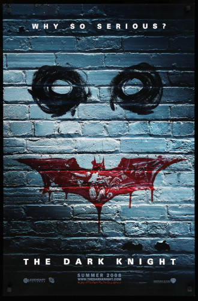

<DOTYPE! html>
<html>
	<head>
		<title> Mroczny Rycerz (2008) </title>
		<meta charset="utf-8">
		<link rel="stylesheet" type="text/css" href="baby.css">
	</head>
	<body>
		<div class="red"> Mroczny Rycerz (The Dark Knight) (2008) </div class="red">
		<div class="orange"> Batman, z pomocą porucznika Gordona oraz prokuratora Harveya Denta, występuje przeciwko przerażającemu i nieobliczalnemu Jokerowi, który chce pogrążyć Gotham City w chaosie. <a href="https://www.youtube.com/watch?v=dQw4w9WgXcQ"> Czytaj więcej... </a> 
			<br> <br> <table>
				<tr> <td><b>Postać</b><td> <td><b>Aktor<b/></td> </tr>
				<tr> <td> Bruce Wayne </td> <td> Christian Bale </td> </tr>
				<tr> <td> Joker </td> <td> Heath Ledger </td> </tr>
				<tr> <td> Harvey Dent </td> <td> Aaron Eckhart </td> </tr>
				<tr> <td> Alfred </td> <td> Michael Caine </td> </tr>
				<tr> <td> Rachel Dawes </td> <td> Maggie Gyllenhaal </td> </tr>
				<tr> <td> James Gordon </td> <td> Gary Oldman </td> </tr>
				<tr> <td> Lucius Fox </td> <td> Morgan Freeman </td> </tr>
				<tr> <td> Jonathan Crane </td> <td> Cillian Murphy </td> </tr>
			</table>
			<div class="white"> <br>
				Czy oglądałeś/aś ten film? <br>
				<input type="radio" id="y" name="watch">
  				<label for="y"> tak </label>
				<input type="radio" id="n" name="watch">
  				<label for="n"> nie </label> <br>
				Jeśli tak, czy podobał Ci się? <br>
				<input type="radio" id="ye" name="like">
  				<label for="ye"> tak </label>
				<input type="radio" id="no" name="like">
  				<label for="no"> nie </label> <br>
				<button type="button" onclick="alert('Dziękuję za wypełnienie!')"> Wyślij </button>
			</div class="white">
		</div class="orange">
		<div class="yellow">  </div class="yellow">
		<div class="footer"> autor: Kacper Szczęsnowicz kl. 2TA </div class="footer">
	</body>
</html>